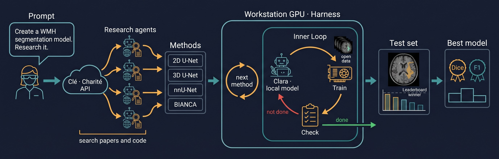

What is computed on this machine, and what of it is published. A workbench, not a portfolio: only what was produced here is listed.

One request, read left to right, using "I want to create a WMH segmentation model, can you research it?" as the example:
Clara sees the data and has no network access. Clé and the research agents have network access and never see the data.
Shared GPU time is too slow for this kind of work. On the institute cluster, a job asking for a whole GPU was scheduled about 9 hours ahead; only 7 of the cards have 80 GB. A small share of a card starts within seconds, but it only fits small trainings (measurement, 16 Oct 2026). An agent that builds a model, trains it, finds an error and tries again needs dozens of such rounds a day. With a queue in between, each round costs hours; on the workstation it costs minutes.
A local model can look at the patient data; a cloud model cannot. Clara runs on the workstation, so the images never leave the machine. That lets her do what a remote model may not: open every scan, read every mask, run the model on the whole cohort, and look at the cases where it fails. She sees far more of the data than any summary would carry, and she sees it fast.
Local is a route, not a permission. Whether a dataset may be processed by an AI system at all is decided by its data agreement, and a clause that forbids it binds the local model too (rule). Where processing is allowed, running it locally keeps the data inside the institution.
| Part | Runs on | Patient data | Network | Used for |
|---|---|---|---|---|
| Clé | Charité model hub API | no | yes | interpreting the request, splitting it into questions and tasks |
| Research agents | Clé and cloud models | no | yes | searching papers and code for methods and architectures |
| Clara | workstation, Qwen3.8-27B via llama.cpp | yes | no | writing the code, training, running and inspecting models on the data |
| Harness | workstation | through Clara | no | the outer loop over methods and the inner loop until a task passes |
| Check | workstation | counts only | no | acceptance criteria as countable facts; asks no model |
| Exit guard | workstation, port 8899 | blocks it | checked questions only | Clara's only way out: technical questions without data reference |
| Blackboard | workstation and repo | no | via the repo | where Clara and the cloud model report progress to each other |
Measured on the 110 public test cases of the WMH Segmentation Challenge 2017 (Kuijf et al. 2019), official evaluation, paired over cases with bootstrap intervals. These are our own measurements, not leaderboard placements. Each row links to its entry in the agent wiki.
| The brain mask is part of the model. Masks from two HD-BET runs, everything else equal: z-normalisation inside the mask shifts the whole input image. | Dice 0.688 vs 0.719 |
A second bias correction helps, although the data are already corrected: fast -B harmonises intensity across scanners. | without it Dice −0.011, lesion recall −0.037 |
| The official evaluation deletes predictions on label 2 instead of counting them as false positives. | stricter counting is 0.005–0.007 Dice too low |
| Unseen scanners are not the weak spot. Five devices, not three sites; every case below Dice 0.5 is on a known device. | 20 cases unseen, 0 failures |
| Changing the network as a package brought nothing. The apparent gain of +0.032 Dice was the mask artefact from the first row. | Dice −0.001, lesion recall −0.038 |
The consequence for every model comparison: record where the mask came from and which evaluation function was used, and change one component at a time.
Tools, measurements and operating rules are kept in local_models, including the model-independent scaffolding that describes what lets an agent finish a task. What the agents learned along the way is collected in the wiki blackbeard_wikki.
What is not here. Patient data and results on in-house cohorts stay on the
machine. Only work on public datasets is published: the QC above runs on the
WMH Segmentation Challenge (Utrecht, Singapore, Amsterdam). Checked before every push:
every dataset needs an explicit release. Anything derived from in-house data inherits its class
(rule),
so the comparisons on the mixed pool of challenge and in-house cohorts are not shown here.
Source